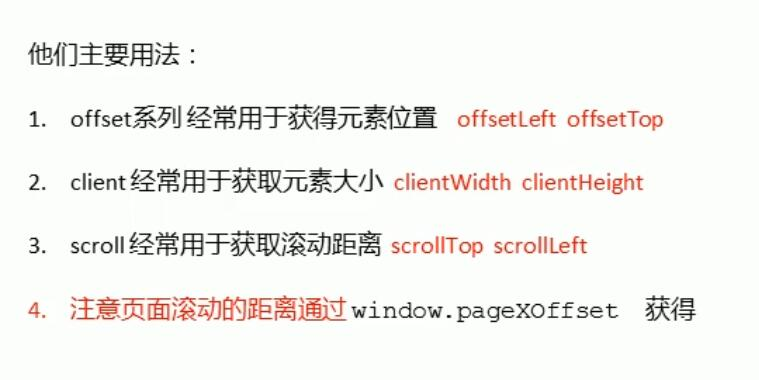
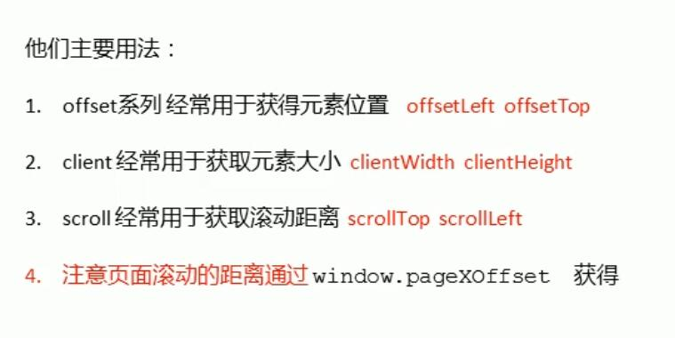

rpec
窗口加载事件 全加载 window.onload=function(){}/window.addEventListener('load',function(){});
BOM加载完就执行 document.addEventListener
调整窗口大小 window.onresize=function(){}/window.addEventListener
定时器 setTimeout clearTimeout setInterval(fn,2000) clearInterval
this指向 全局作用域或者普通函数以及定时器的this指向window 方法调用中谁调用指向谁 构造函数中this指向构造函数的实例
location对象的属性 location.href/host/port/pathname/search/hash
history对象 back() forward() go(1/-1)
offset element.offsetParent/offsetTop(返回元素相对于有定位的爹的上边框距离)/offsetLeft/offsetsetLeft/offsetWidth/offsetHeight 返回值不带单位
获得元素大小位置用offset 改变元素值用style
client element.clientTop/clientLeft(边框大小)/clientWidth/clientHeight(元素大小 不含边框margin)
立即执行函数 function fn(){} fn(); (function(){})();(function(){}())也可以传参 第二个小括号相对于调用函数
scroll element.scrollTop/scrollLeft(被卷去的上侧距离)/scrollWidth/scrollHeight（内容自身高度 不含边框）
 

封装动画 把var time改成obj.time 给不同的元素不同的定时器
缓动动画 核心 (target-now)/10 作为每次的步长
轮播图 箭头显示隐藏 动态生成小li且绑定排他和点击切图 左右箭头点击事件 根据num来记录显示图片的序列号并实现无缝切换
封一个circle变化的函数 每次图片变化就调用 保证图片和圈圈对应 最后手动调用定时器
触屏事件 touchstart touchmove touchend
触屏事件对象 touches targetTouches(记这个) changedTouches
获得手指的坐标值 targetTouches[0].pageX/pageY
手指移动会触发滚动屏幕的默认事件 e.preventDefault();
过度完成事件transitionend
classList 添加切换和移除类 element.classList.add/remove/toggle('类名')
移动端click延时问题 1.禁止缩放 2.封装touch
移动端轮播图 动态生成小li 开定时器 监听过度事件实现无缝播放 监听手指触屏事件 根据移动距离来绝定图片的切换 手指离开再开定时器
存储获得移除数据 sessionStorage sessionStorage.setItem(key,value)/getItem(key)/removeItem(key) 一个页面内 关闭浏览器无了
localStorage.setItem(key,value)/getItem(key)/removeItem(key)/删所有clear() 一个浏览器内 永存除非手删